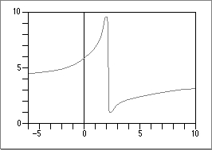

Legacy Document
Important: The information in this document is obsolete and should not be used for new development.
Important: The information in this document is obsolete and should not be used for new development.


Using IEEE Arithmetic
This section provides some example computations and describes how using IEEE arithmetic in the PowerPC Numerics environment makes programming these computations easier.Evaluating Continued Fractions
Consider a typical continued fraction .
An algebraically equivalent expression is :
Both expressions represent the same rational function, one whose graph is smooth and unexceptional, as shown in Figure 1-2.
Figure 1-2 Graph of continued fraction functions cf(x) and rf(x)

Although the two functions and are equal, they are not computationally equivalent. For instance, consider at the following values of x:
Whereas is perfectly well behaved, those values of x lead to division by zero when computing and cause many computers to stop. In IEEE standard arithmetic, division by zero produces an Infinity. Therefore, PowerPC Numerics has no difficulty in computing for those values.
On the other hand, simply computing instead of can also cause problems. If the absolute value of x is so big that overflows the chosen data format, then approaches but computing encounters , which yields something else. PowerPC Numerics returns NaN for such cases; some other machines return . Also, at arguments x between 1.6 and 2.4, the formula suffers from roundoff error much more than does. For those reasons, computing is preferable to computing if division by zero works the way it does in PowerPC Numerics, that is, if it produces Infinity instead of stopping computation.
In general, division by zero is an exceptional event not merely because it is rare but because different applications require different consequences. If you are not satisfied with the consequences supplied by the default PowerPC Numerics environment, you can choose other consequences by making the program test for NaNs and Infinities (or for the flags that signal their creation).
Rather than sprinkle tests throughout the program in an attempt to keep exceptions from occurring, you might prefer to put one or two tests near the end of the code to detect the (rare) occurrence of an exception and modify the results appropriately. That is more economical than testing every divisor for zero (since zero divisors are rare).
Computing the Area of a Triangle
Here is a familiar and straightforward task that fails when subtraction is aberrant: Compute the area of a triangle given the lengths of its sides. The formula given here performs this calculation almost as accurately as its individual floating-point operations are performed by the computer it runs on, provided the computer does not drop digits prematurely during subtraction. The formula works correctly, and provably so, on a wide range of machines, including all implementations of PowerPC Numerics.The classical formula, attributed to Heron of Alexandria, is
where .
For needle-shaped triangles, that formula gives incorrect results on computers even when every arithmetic operation is correctly rounded. For example, Table 1-2 shows an extreme case with results rounded to five decimal digits. With the values shown, rounded
must give either 100.01 or 100.02. Substituting those values for s in Heron's formula yields either 0.0 or 1.5813 instead of the correct value 1.000025.Evidently, Heron's formula would be a very bad way for computers to calculate ratios of areas of nearly congruent needle-shaped triangles.
Table 1-2 Area using Heron's formula Correct Rounding downward Rounding
upwardx 100.01 100.01 100.01 y 99.995 99.995 99.995 z 0.025 0.025 0.025 (x+(y+z))/2 100.015 100.01 100.02 A 1.000025 0.0000 1.5813 A good procedure, numerically stable on machines that do not truncate prematurely during subtraction (such as machines that use IEEE arithmetic), is the following:
- Sort so that .
- Test for to see whether the triangle exists.
- Compute A by the formula
The success of the formula depends upon the following easily proved theorem:
- WARNING
- This formula works correctly only if you do not remove any of the parentheses.

THEOREM If p and q are represented exactly in the same conventional floating-point format, and if , then too is representable exactly in the same format (unless suffers underflow, something that cannot happen in IEEE arithmetic).
The theorem merely confirms that subtraction is exact when massive cancellation occurs. That is why each factor inside the square root expression is computed correctly to within a unit or two in its last digit kept, and A is not much worse, on computers that subtract the way PowerPC Numerics does. On machines that flush tiny results to zero, this formula for A fails because can underflow.